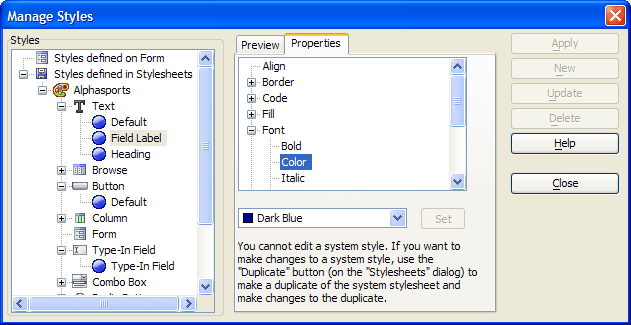

Managing Style Properties
When in design mode clicking Stylesheets > Apply or Create a Stylesheet... > Manage Styles displays the Manage Styles dialog box. Below are the various object properties that you can be set in the Manage Styles dialog box.
The Preview tab displays the properties of the selected control type.
The Properties tab allows you to set the properties of the selected control type. Note : You can only modify the properties of stylesheets that you have created.

To change a property of a stylesheet:
Select the form or browse element of the style in the Styles list. Expand the tree to see and select lower-level elements.
Once you have selected an element, there may be a preview of how it looks on the Preview tab.
Display the Properties tab.
Select the property you want to change. Expand the tree to see and select lower-level properties.
Pick the appropriate value for the property from the list and click Set.
See Also